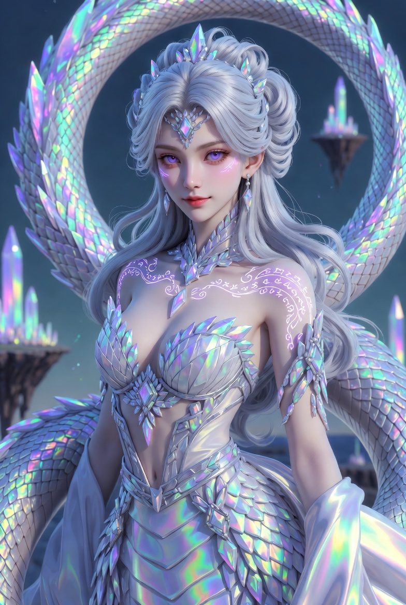
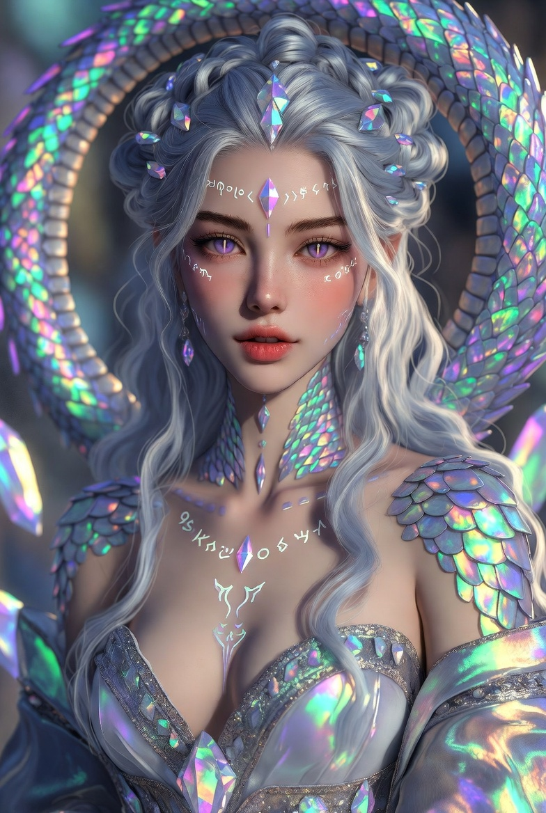

Селеста Опаловая Чешуя-Блэкхарт
Нага с пробуждённой кровью Хрустальных Драконов
- Возраст
- 29–31 год; После открытия Врат — 39–41 год
- Пол
- Женский
- Рост
- 170 см + хвост (~4,5–5 метров)
- Специальность
- Соосновательница и дипломат «Моста Миров», глава Гильдии Кристаллографов, ректор и соосновательница Академии Рунической Хроматики. Мастер хрустальной энергетики и драконьей магии. Дипломат Хрустальных островов в Золотом Круге.
Внешность (кратко)
Ослепительно красивая нага с перламутрово-опаловой чешуёй, которая переливается всеми цветами радуги в зависимости от освещения и настроения. Длинные серебристо-белые волосы, уложенные в сложные причёски с драгоценными камнями. Аметистовые глаза с вертикальными зрачками. Гибкое, грациозное тело. После ритуала Вечного Пламени может полностью трансформироваться в величественную хрустальную драконицу: полупрозрачная радужная чешуя, мощные крылья из чистой энергии, сияющие внутренним светом глаза и изящные рога. В обеих формах на коже проявляются светящиеся рунические узоры, гармонично сплетённые с драконьими символами.
Предыстория
Дочь Великого Магистра Торговли лорда Сиразуша из влиятельного Дома Опаловой Чешуи. Встретилась с Эвелином на приёме в Серебряных Гильдиях. Сначала их отношения были деловыми и романтическими одновременно. После событий на Железном Рынке и путешествия на Хрустальные острова узнала, что её род — прямые потомки Хрустальных Драконов. Участвовала в ритуале открытия Врат и в ритуале Вечного Пламени, где полностью пробудила древнюю драконью кровь. Стала одной из ключевых фигур в объединении двух миров и укреплении барьера между измерениями.
Характер
Умная, грациозная, уверенная в себе и обладающая острым деловым чутьём. Сочетает аристократическую утончённость с тёплой, искренней заботой о близких. Немного кокетлива и любит интеллектуальные беседы. Очень предана семье и своему делу. После пробуждения драконьей сущности стала ещё более величественной и спокойной, но сохранила живой ум и лёгкий юмор. Ценит красоту, знания и гармонию между традициями и прогрессом.
Особая способность
Полная трансформация между формой наги и хрустальной драконицы. Может манипулировать хрустальной энергетикой и драконьим пламенем (не обжигающим, а жизненным и стабилизирующим). Совместно с Эвелином создаёт и поддерживает стабильные межмировые порталы, усиливая руническую магию своей энергетикой. Способна пробуждать и направлять древние кристаллические потоки, создавать защитные коконы из света и кристаллов, а также видеть «нити» между мирами и живыми существами. Её присутствие стабилизирует магические бури и усиливает любые рунические конструкции.
Positive Prompt (для генерации):
masterpiece, best quality, ultra-detailed, 8k, absurdres, beautiful female naga with awakened crystal dragon blood, 30 years old, extremely gorgeous and graceful, upper human-like torso of a stunning woman with flawless pale skin, long flowing silver-white hair styled in intricate elegant updo with embedded opals and crystals, amethyst eyes with vertical dragon pupils, gentle yet confident expression, slight seductive smile, iridescent opal scales covering her long powerful serpentine tail (total length ~5 meters), scales shimmer with rainbow colors depending on light and mood, glowing crystalline runes and dragon symbols flowing across her body and tail, wearing luxurious diplomatic attire with crystal embellishments, elegant silk and crystalline jewelry in white, silver and amethyst tones, sometimes shown in full crystal dragoness form: majestic winged dragon with translucent rainbow crystalline scales, powerful energy wings, glowing amethyst eyes, elegant crystal horns, radiant inner light, delicate glowing runic patterns on skin, ethereal magical aura, floating crystal particles, standing confidently in elegant pose, sophisticated and regal atmosphere, background of crystal spires, floating islands and shimmering portals, highly detailed scales and skin texture, perfect anatomy, intricate hair, sharp focus, cinematic lighting, soft iridescent highlights
Negative prompt (для генерации:)
lowres, bad anatomy, bad hands, deformed, mutated, extra limbs, missing limbs, blurry, low quality, worst quality, text, watermark, signature, error, cropped, jpeg artifacts, ugly, disfigured, morbid, gross proportions, malformed limbs, fused fingers, cartoon, chibi, anime, 3d render, cgi, plastic skin, doll-like, overexposed, underexposed, grainy, child, underage, loli, shota, nsfw, nude, fully naked, exposed breasts, explicit, erotic pose, aroused
Flux Positive Prompt (для генерации):
A breathtaking portrait of Celeste Opalscale Blackheart, a beautiful female naga-dragon hybrid around 30 years old. She has the graceful upper body of an elegant woman with long, silky silver-white hair in an intricate aristocratic hairstyle adorned with opals and crystals. Her eyes are striking amethyst with vertical dragon pupils. Her lower body is a long, powerful serpentine tail covered in shimmering iridescent opal scales that shift through all colors of the rainbow depending on the light and her emotions. Glowing crystalline runes and ancient dragon symbols dance across her skin and scales. She wears luxurious diplomatic robes with crystal accents in silver, white and amethyst tones, radiating sophistication and power. Sometimes depicted in her full awakened crystal dragoness form: a majestic winged dragon with translucent rainbow crystalline scales, large wings made of pure energy, elegant crystal horns and radiant amethyst eyes glowing with inner light. She stands with regal confidence and gentle warmth, surrounded by floating crystal shards and soft magical glow. Ethereal atmosphere, intricate details on scales and hair, cinematic lighting with iridescent highlights, fantasy concept art, masterpiece, highly detailed, sharp focus, natural yet magical beauty.
Flux Negative Prompt (для генерации):
blurry, low quality, deformed, bad anatomy, extra limbs, fused fingers, mutated hands, poorly drawn face, bad proportions, text, watermark, logo, signature, cartoon, anime, 3d render, plastic skin, doll-like, child, underage, loli, nude, fully naked, explicit, erotic, sexual pose, exposed body